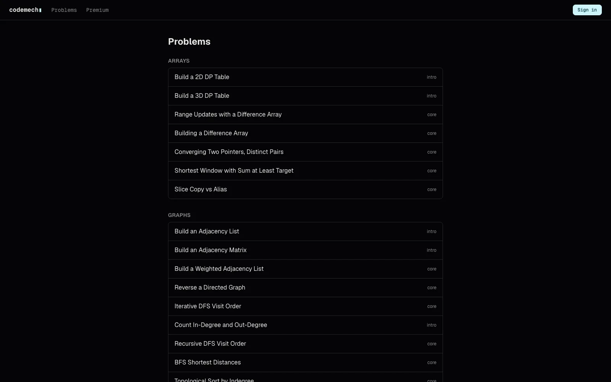

Practice · Judge · C++ / Python / JS
CodeMech
You can explain DP — but can you type the table?

01 Problem
Interview prep drills whole algorithms, but failures usually sit one level lower: the constructions every solution starts with. Sizing a 2D vector, building an adjacency list, path-compressing a DSU, querying a Fenwick tree. Fumble those mechanics and the clever part never gets written.
02 Approach
CodeMech is a drill site for exactly that layer: 54 small judged exercises across vectors, difference arrays, two pointers, graphs, DSU, Fenwick and segment trees, tries, and monotonic structures. Each problem ships a statement, a starter, a harness, and reference solutions, in C++, Python, or JavaScript wherever the mechanic applies.
Submissions compile and run through Judge0 in production, with a sandbox-free local judge for zero-key dev loops. Problems are file-defined under problems/<slug>/ and seeded into Postgres, grouped into assessment sets with free-tier and repeat-gap rules. A per-user daily judge quota, auth with verified-email admin gating, password reset, and Stripe passes round out the site.
03 Tech stack
Frontend
Backend
Infrastructure
04 Outcome
54
judged drills across arrays, graphs, DSU, and range structures
3
languages — C++, Python, and JavaScript with per-language limits
It is live with signup, judging, assessment sets, and premium passes. The catalog is validated by a problem-layout gate, unit tests, and e2e specs, and a two-minute local setup (no API keys) keeps adding a drill as cheap as adding a directory.